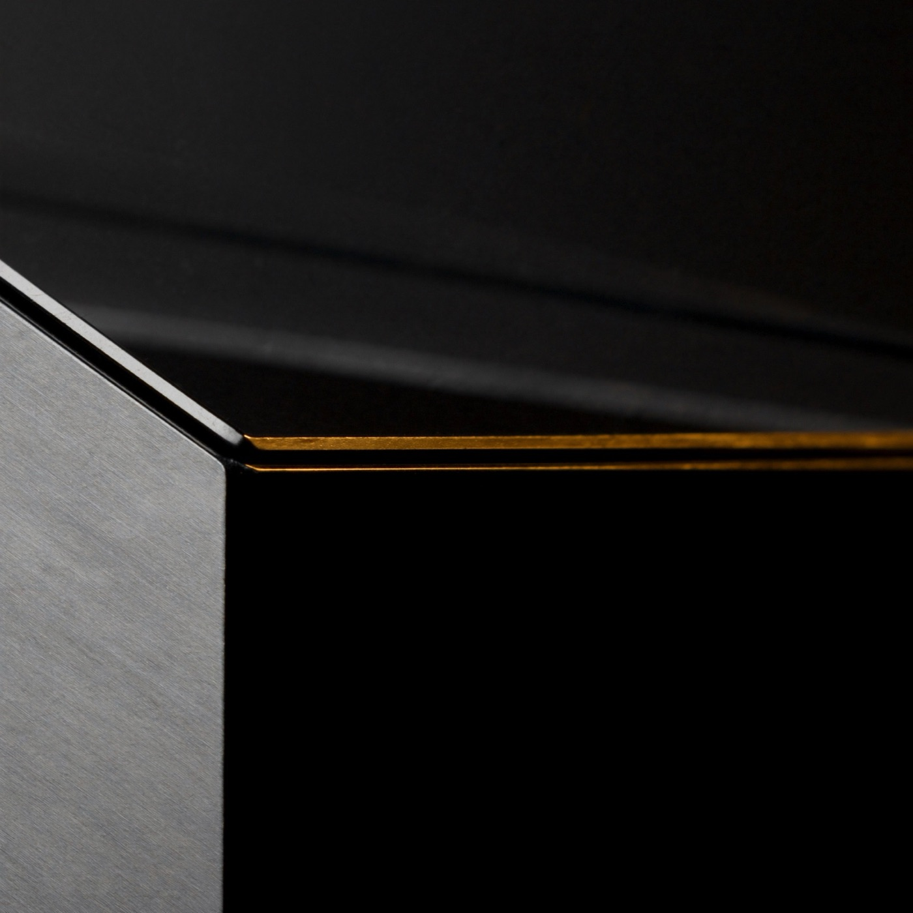
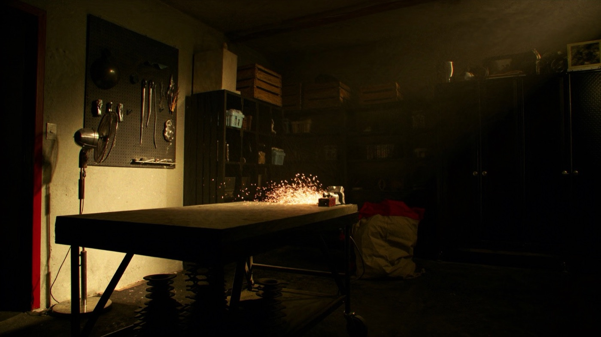
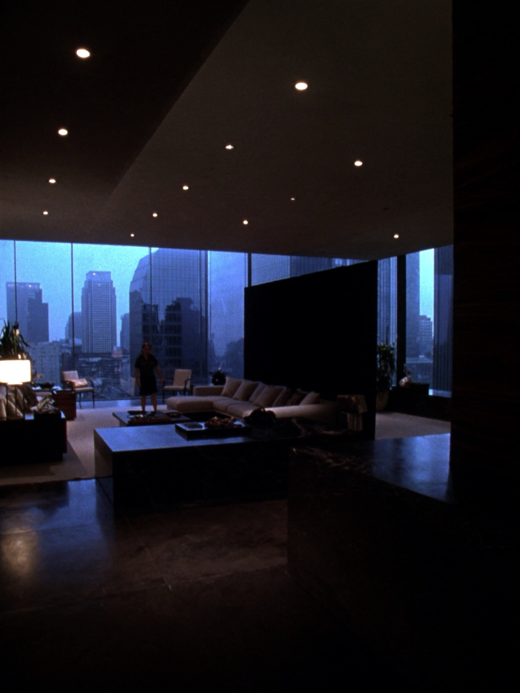

MARK
Lo stesso dei miei video.
Lo accendiamo insieme, in videochiamata.
GUARDALO LAVORARE
GLI PARLI.
TI RISPONDE.
A voce, quando vuoi. Ti chiama «signore», se vuoi anche quello.

UNA SQUADRA
CHE LAVORA PER TE.
Agenti che si parlano tra loro e si passano il lavoro.
ANCHE
MENTRE DORMI.
Un esempio di notte di Mark.
SI RICORDA
TUTTO.
Clienti, progetti, decisioni. Ogni giorno sa qualcosa in più del tuo lavoro.
ANCHE
DAL TELEFONO.
Gli scrivi o gli mandi un vocale su Telegram. Ti risponde a voce.
NON TI SERVE
UN TUTORIAL.
Da solo
Mesi di prove
Voce lenta
Memoria che si azzera
Con me
Un'ora di call
Già collaudato
Acceso quando chiudi
OGNI VERSIONE
È PIÙ FORTE.
Mark cresce a giorni di rilascio. Gli aggiornamenti arrivano anche a te.
TRE PASSI
10 POSTI
A OTTOBRE.
Ogni Mark lo accendo io, con te.
DOMANDE
Devo saper programmare?
No. Si installa da solo, passo per passo, e in call ci sono io.
Funziona su Windows?
Sì, su Mac e su Windows. Va bene il computer che usi già.
Quanto costa al mese?
Con me nessun abbonamento. Serve il tuo abbonamento Claude, da circa 20 € al mese: è il suo cervello.
I miei dati?
Restano sul tuo computer. E niente esce a nome tuo senza il tuo sì.
Non ho un'azienda. Mi serve?
Se hai un lavoro, dei progetti o dei clienti, sì. Lo uso anche per la vita di tutti i giorni.
